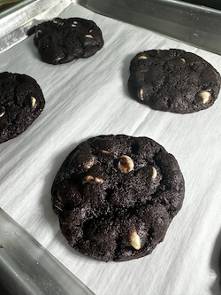

repair
For a little while, I'd noticed that one point on my oven's heating element was brighter than the rest of it, pretty much all the time it was on. A few days ago, I was preheating the oven to bake some cookies, and took a look inside the oven and saw that the previously brighter part of the heating element was now VERY bright, possibly on fire. I turned the oven off, kept the door open to let things cool down faster, and watched as things came back to a state of Not On Fire.
Today, the replacement element came. With the help of a nice video demonstrating the repair process, I manged to replace the element, even through a bit of panic when one of the connector clips had almost no extra reach, and also disappeared into the back of the oven. The cat gave some questionable supervisory help, but I'm now enjoying some of the cookies I'd intended to make last week.
